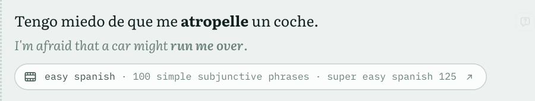

In the entry: an example that is a clip →
How it works

1An index, not a copy. Spoken Usage Retrieval, a separate repository, reads the captions of your channels and indexes every word by its form and its dictionary form. The videos stay on YouTube.
2Retrieve, then judge. When a word is saved the index returns candidate passages. One model call keeps those that use this meaning and translates them. Keeping none is a valid answer.
3Play and follow. The clip plays from YouTube at that second, and the words light up as they are said. Words are aligned with the translation, so a word can be matched to its part of it.

MeasuredDoes the translation cover the whole passage? One stored translation had silently dropped half of its passage. Old prompt against a rewritten one: 10 passages, 4 target languages, 3 models, 343 calls.
Badly cut off: 8 → 0
Fully covered: 81% → 91%
McNemar p = 0.004experiments/clip-translation
Badly cut off: 8 → 0
Fully covered: 81% → 91%
McNemar p = 0.004experiments/clip-translation
Your channelsA starter list is curated for Spanish; any channel can be added in Settings.